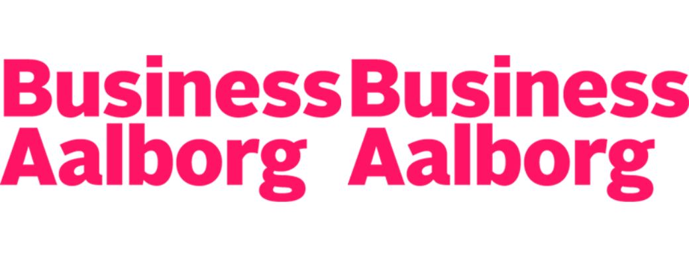

BusinessAalborg
Jeg er ansat som studentermedhjælper hos kommunikationsafdelingen hos BusinessAalborg. Her sidder jeg primært med opgaver tilhørende vores iværksættertilbud og Start Up Café, men jeg hjælper også kolleger hos Green Hub Denmark og Invest in Aalborg.
Mine opgaver hos BusinessAalborg er meget alsidige, og jeg får lov til at prøve mange forskellige værktøjer af. Jeg har dermed fået stor indsigt i, hvad et "rigtigt" job kan indebære samt gode erfaringer til at omgås andre mennesker på en "voksen" arbejdsplads.
Mine opgaver hos BusinessAalborg har bl.a. været:
- SoMe content til Facebook og LinkedIn
- Undertekstning af videoer i Youtube Studio og Dreambroker
- Grafisk arbejde i Canva og Adobe InDesign
- Produktion af nyhedsbrevstekst
- Vedligeholdelse og opdateringer på hjemmeside